【サービスのアクション操作】
はじめに
本記事では、サービス管理画面の構成と、起動／停止／グループ操作などのアクション機能について詳しく解説します。
サービスの追加・編集・削除など設定ファイルに関わる操作については ▶サービスの設定ファイル操作 のページでご紹介しています。
サービス管理画面の構成
| 見出し | 内容 |
|---|---|
| 操作 | サービスごとに操作できるボタンの並び（>> コチラを参照） |
| サービス名 | サービスごとに設定された一意の名称 |
| グループ | グループ起動／グループ停止を行うための一意の名称 |
| 状態 | サービスの状態を文字と文字色で表示（>> コチラを参照） |
| CPU | サービスごとのCPU稼働率（>> コチラを参照） |
| メモリ | サービスごとのメモリ使用率（>> コチラを参照） |
| 起動日時 | サービスを起動した日時 |
サービスごとのボタン操作
ボタンの配置は以下の通りです。
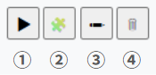
ボタン種類の内訳は以下の通りです。
※ サービスの起動中は、以下のように「編集」「削除」ボタンは使用できません。
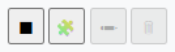
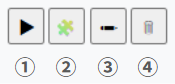
ボタン種類の内訳は以下の通りです。
| ボタンの種類 | 内容 |
|---|---|
| ①起動／停止 | 起動（▶）、または停止（■）する度にボタンが切り替わる |
| ②カスタムモニタリング | サービスごとにカスタマイズされたモニタリング項目が表示される |
| ③編集 | サービスごとに編集できる入力フォームが表示される |
| ④削除 | サービスのエントリが削除される |
※ サービスの起動中は、以下のように「編集」「削除」ボタンは使用できません。
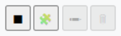
サービス状態の表示
| 状態 | 説明 | 背景色 |
|---|---|---|
| 起動中 | ランチャーがサービスを起動済み | 緑系 |
| 停止中 | ランチャーがサービスを停止済み | グレー系 |
| 操作中 | ランチャーが操作中（起動／停止中） | 黄系 |
| 未検知 | ランチャー以外の要因で停止 | 赤系 |
サービスの状態は、以下のように文字と背景色で表現されます。
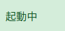
⇒
起動中
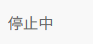
⇒
停止中
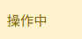
⇒
操作中
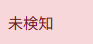
⇒
未検知CPU／メモリ使用率の表示
色分けのルールは CPUリソース監視／メモリリソース監視それぞれの閾値制御と同じです。
CPU稼働率の色分け制御
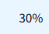
⇒
通常（安定稼働中）
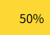
⇒
warn（注意レベル）
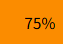
⇒
alert（警戒レベル）
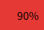
⇒
critical（即対応推奨レベル）メモリ使用率の色分け制御
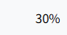
⇒
通常（安定稼働中）⇒
warn（注意レベル）⇒
alert（警戒レベル）⇒
critical（即対応推奨レベル）基本アクションの操作
基本的なアクションは以下の赤枠の部分で操作できます。
サービスが起動するまでの状態は、基本的に以下のように変化します。
サービスが停止するまでの状態は、基本的に以下のように変化します。
外部要因でサービスが停止していた場合、以下のように
※ この場合は停止しているだけなので、サービスに問題がなければ起動ボタン押下で起ちあがります。
サービスが起動するまでの状態は、基本的に以下のように変化します。
停止中⇒
操作中⇒
起動中サービスが停止するまでの状態は、基本的に以下のように変化します。
起動中⇒
操作中⇒
停止中外部要因でサービスが停止していた場合、以下のように
未検知 の状態になります。起動中⇒
未検知※ この場合は停止しているだけなので、サービスに問題がなければ起動ボタン押下で起ちあがります。
グループアクションの操作
本ランチャーではサービスをグループ単位で操作できます。
グループアクションは以下の赤枠の部分で操作できます。
事前にプルダウンで対象のグループを選択してからアクションを実行する必要があります。
プルダウンが未選択の状態で実行すると、以下のように警告が表示されます。
グループ単位で実行される事以外は、基本アクションの実行時と動作は同じです。
グループアクションは以下の赤枠の部分で操作できます。
事前にプルダウンで対象のグループを選択してからアクションを実行する必要があります。
プルダウンが未選択の状態で実行すると、以下のように警告が表示されます。
グループ単位で実行される事以外は、基本アクションの実行時と動作は同じです。
おわりに
ランチャーを導入したばかりの初期状態ではサービス設定ファイルが存在しませんので、ランチャーへ接続すると以下のように表の見出しのみが表示されます。
設定ファイルは
GUIで生成する方法は ▶サービスの設定ファイル操作 のページをご覧ください。
なお、サービス管理を使わない場合でも、CPU／メモリ／ディスクなどの各リソース監視を含む他の機能は利用できます。
設定ファイルは
setting/services.json.sample を参考にしながらテキストエディタなどを使って setting/services.json というファイルを設置するか、GUIで生成する事もできます。GUIで生成する方法は ▶サービスの設定ファイル操作 のページをご覧ください。
なお、サービス管理を使わない場合でも、CPU／メモリ／ディスクなどの各リソース監視を含む他の機能は利用できます。